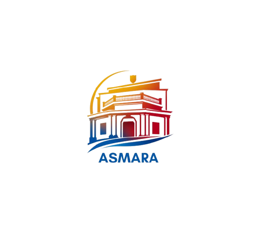

Augmented Salatiga Monumen
& Arsitektur Reality
Tekan tombol "MULAI KAMERA AR" di halaman utama untuk mengaktifkan kamera.
Arahkan kamera ke kartu bergambar ASMARA hingga terdeteksi dalam bingkai scan.
Objek 3D Gedung Papak akan muncul di layar kamu secara augmented reality!
Tekan tombol speaker untuk mendengarkan penjelasan sejarah dalam Bahasa Indonesia.
Uji pemahaman kamu dengan menjawab kuis interaktif tentang Gedung Papak!
Pastikan kamera mendapat cahaya yang cukup dan kartu dipegang dengan stabil!